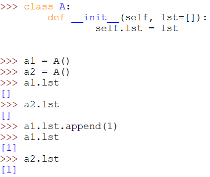

הנושא הוזכר המחברות.אם אתה עושה את זה כארגומנט בפונקציה אז תשתמש ב None כערך ברירת מחדל
DissonantHarmony
זה נועד על מנת שקריאה נוספת לפונקציה לא תרחיב את הרשימה שהוגדרה בפעם הראשונה.
למשל: פונקציה שמקבלת מספר, ורשימה אופציונלית של שני מספרים. החזר את המכפלה של המספר, בסכום שני המספרים שברשימה:
def times_this (number, numbers = []):
return number * sum(numbers)
אם נקרא לפונקציה:
times_this(1, [2, 3])
אז נקבל:
1 * 5 = 5
אבל אם נקרא לפונקציה:
times_this(1, [4, 5]),
אז לא נקבל:
1 * 9,
אלא:
1 * 14
למה?
כי הרשימה הפנימית תכיל את 2, 3 שהיו קודם,
ועכשיו היא תהיה:
[2, 3, 4, 5]
ההצעה לשמור את המשתנה כ-None, ולהגדיר אותו מבפנים, נועדה למנוע את זה.
*אבל אם זה המקרה הרצוי?
או אלטרנטיבית: מה אם הקוד שלי בנוי בצורה כזו שאי אפשר לקרוא לפונקציה הזו עוד פעם בלי שהרשימה הזו תהיה כבר ריקה?
Yam
הדוגמה שתיארת היא לא מה שיקרה, נסה להריץ והיווכח בכך. בדוגמה שנתת אתה תקבל 1 * 9 ולא 1 * 14, כיוון שלא השתמשת כלל בפרמטר הדיפולטי שהוגדר.
הבעיה מתחילה שאתה משנה את numbers במהלך הפונקציה:
def a(b, c=[]):
c.append(b)
return c
a(5)
a(6)
print(a(7))
יחזיר לך [5, 6, 7].
העניין הוא שכמעט אף פעם זה לא מה שאתה רוצה.
אם אתה שומר state על ארגומנט של הפונקציה זה סימן לבחירות עיצוב לא כ"כ טובות בד"כ, ואולי היה אפשר לעשות דברים אחרת.
ofirp
אפשר גם להוסיף תנאי שיקבע מפורשות מה אתה רוצה שיהיה אם לרשימה יש ערך ואם היא ריקה או לא הועברה בכלל בקיראה לפונקציה. None הוא רק ערך ברירת מחדל אם לא העברת רשימה בכלל.
לייק 1
DissonantHarmony
אתה צודק. (עכשיו גם נכנסתי לשחק עם זה, בשביל “להתלכלך, ולהרגיש בידיים”).
זה עדיין לא עונה לי על השאלה.
-אני אחדד: הארגומנט הזה נמצא בחתימה של __init__.
אנחנו מגדירים ישות, והיא מקבלת פרמטר nemesis שמצביע על הרשימה שמועברת בארגומנט הזה (או לברירת המחדל: רשימה ריקה), וזהו. אין יותר התעסקות עם זה בתוך המתודה.
אני מבין למה זה משמעותי בעיניך כחונך להטמיע בנו הרגלים בריאים, ואני לחלוטין מתכוון גם, כחניך, לסמוך על התהליך שאתה מתווה לנו ולתקן את זה. (וחוץ מזה: אני רוצה לכבד את הבודקים, ואת הזמן שלהם בתרגיל שלא צבוע באדום).
ועם, זאת אני ממש רוצה לשאול:
בהנחה שלא פספסתי משהו - והזהירות הזו לא נחוצה הפעם: אם היית מסיר לרגע את הכובע של החונך, ומרכיב במקומו משקפים של מתכנת ותיק שפשוט בא לעבוד עם הקוד שלי - איך היית מרגיש לגבי “חכמולוגיה” כזו? (אם יוצאים מנק’ הנחה שבמקרה הזה אין בה צורך).
DissonantHarmony
אני מכין את מה שאני אומר. (וזה מה שאני אעשה),
אבל אני מרגיש שמה שזה בא להשיג הפעם - לא נחוץ.
ואז (בהנחה שזה באמת לא נחוץ, ולא פספסתי כלום) - אני מרגיש שזו סתם חכמולוגיה.
לתפישתי (ההדיוטה), זה לא שונה מכתיבת הערה שמסבירה משהו סופר מובן, או ביצוע במבחן במתמטיקה איזו פעולה בזהירות שאין בה צורך, סתם כדי להראות לבודק שאני יודע שצריך להיות זהיר. (גם אם במקרה הזה - לא).
devorack
אני מניחה שהייתי ניגשת לזה מנקודת מבט של מישהו אחר - שקורא את הקוד / רוצה לשנות אותו.
האם זה קריא? כלומר, האם קל לפספס את השינוי שקורה במקרה הזה?
אם יערכו שינויים מסוימים בתנאי המשחק, ו/או יצטרפו שימושים נוספים למשתנה או לפונקציה, האם צורת הכתיבה שבה בחרת תאפשר זאת בעריכה מינימלית?
לייק 1
orpazf
אתה מניח שבאתחול של אובייקט חדש של המחלקה תהיה רשימה ריקה חדשה, ולמרבה הצער זו הנחה שגויה

5 לייקים
DissonantHarmony
בום.
הלכתי לערוך.
בי.
3 לייקים
DissonantHarmony
אגב, בניסוי שלי קרו דברים מעניינים:
ביצירת אובייקטים - כל אחד בשלו, ומצביע לאן שנראה שמתבקש.
הוא מתווסף גם לרשימה של player_1.
*אך player_2 נשאר אפאתי.
ננסה לעשות append לרשימה שאליה מצביע player_3, וזה יתווסף ל-player_1, ו-player_3, אבל player_2, שקבל ערך כשהוגדר - עדיין אפאטי.
אני מבין מכך שכמו שאורפז אמרה - כל המשתנים שבהם nemeses הוא ברירת המחדל - חולקים את אותה הרשימה.
*אבל למדתי שאלו שכן מקבלים ערך (ולא משתמשים בברירת המחדל) - יהנו מרשימה עצמאית משלהם.
*זה גם מסביר למה הכל היה נראה “חלק” בהתחלה - כשהדפסתי את האויבים של player_1, ו-player_2, וחשבתי בטעות ש: “רואים? כל אחד, והאויבים שלו!” (לא: player_2 מקבל רשימה משלו, אבל כל player_x שלא הוזנה להם רשימה, ומשתמש בברירת המחדל - יחלקו רשימה משותפת, כמו שקרה עם player_1 ו-player_3 בניסוי הזה).
Yam
התחכמויות בקוד לא מובילות בד"כ למקומות טובים.
הן לא קריאות למשתמשים שבאים אחריך, ובסופו של דבר כשבאים להרחיב את התוכנה הן מתגלות כמקלות בגלגלים.
מהמקום שלי אני יכול לתרום שברוב המוחלט של המקרים עדיף לחפש את הדרך הנקייה והיסודית לכתוב קוד.


{kind=link}
{kind=link}
{kind=link}